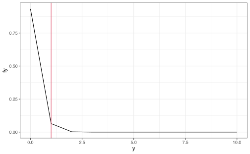
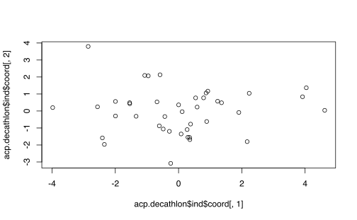
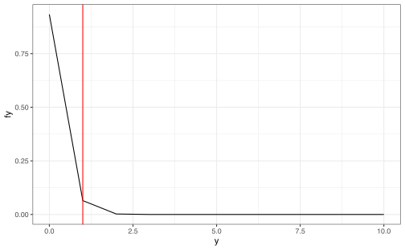
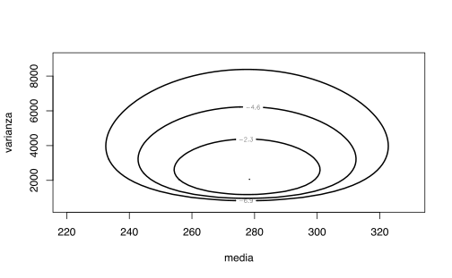

Capítulo 8 Análisis en componentes principales
Si se quiere seleccionar la mejor proyección de 2 variables de una nube de puntos \(X_1,\dots, X_p\), se debe hacer \(\binom{p}{2}\) gráficos de dispersión. Se debe seleccionar la que tenga menor varianza, es decir, en los siguientes gráficos, la mejor foto sería la que tenga la mayor variabilidad.
Usaremos como base los libros de (Husson, Le, and Pagès 2017) y (James et al. 2013).
library(rgl)
library(car)
knitr::knit_hooks$set(webgl = hook_webgl, rgl = hook_rgl)
knitr::opts_chunk$set(fig.pos = "!h")set.seed(123)
x1 <- rnorm(1000, 0, 2)
x2 <- cos(rnorm(1000, 0, 2))
x3 <- x1 + rnorm(1000, 0, 2)GGally::ggpairs(data.frame(x1, x2, x3))
plot3d(x1, x2, x3, point.col = "black")
plot3d(scale(x1), scale(x2), scale(x3), point.col = "black")El ACP lo que busca es un número reducido de dimensión que represente el máximo de variabilidad en las observaciones eliminando la mayor cantidad de ruido posible.
8.1 Representación gráfica

Tomado de The shape of data
8.2 Primer componente principal
\[ Z_1 := \phi_{11}x_1 + \phi_{21}x_2 + \dots + \phi_{p1}x_p;\quad \text{con } \sum_{j=1}^{p}\phi_{j1} = 1\] tal que \(Z_1\) tenga la varianza máxima.
Al vector \(\phi_1 = (\phi_{11}, \phi_{21},\dots,\phi_{p1})\) se le llama pasos o cargas.
\(X = (X_1,\dots,X_p)_{n\times p}\) es la matriz de diseño donde cada columna tiene media 0. Se resuelve el problema \[\hat{\phi}_1=\underset{\Vert\phi_1\Vert_2^2=1}{\mathrm{argmax}} \left\lbrace\dfrac{1}{n}\sum_{i=1}^{n}\left(\sum_{i=1}^p \phi_{j1} X_{ij} \right)^2 \right\rbrace \] La restricción de minimización se puede rescribir como \(\Vert\phi_1\Vert_2^2= \sum_{j=1}^p \phi_{j1}^2 = 1\)
Los \(Z_{11},\dots, Z_{n1}\) son los scores del primer componente principal.
\(\phi_1\) es la dirección en el espacio característico en \(\mathbb{R}^p\) en donde los datos tengan la máxima varianza.
Esta última expresión se podría rescribir de forma matricial como
\[ \hat{\phi}_1 = \underset{\Vert\phi_1\Vert_2^2=1}{\mathrm{argmax}} \left\{ \phi_1^\top X^\top X \phi_1 \right\} \]
donde \(\phi_1 = (\phi_{11}, \phi_{21},\dots,\phi_{p1})\)
dadas las condiciones, esta expresión se podría simplificar un poco más en
\[ \hat{\phi}_1 = \underset{\phi_1}{\mathrm{argmax}} \left\{\frac{\phi_1^\top X^\top X \phi_1 }{\phi_1^\top \phi_1}\right\} \]
Dado que la expresión anterio es un coeficiente de Rayleigh, se puede probar que \(\hat{\phi}_{1}\) corresponde al primer vector propio de la matriz \(X^\top X = \mathrm{Cov}(X)\) si las columnas de \(X\) son centradas.
8.3 Segunda componente principal
\[ Z_{2}:= \phi_{12}x_1 + \phi_{22}x_2+\dots+\phi_{p2}x_p\] \[\underset{\Vert\phi_2\Vert_2^2=1}{\mathrm{argmax}} \left\lbrace\dfrac{1}{n}\sum_{i=1}^{n}\left(\sum_{i=1}^p \phi_{j2} X_{ij} \right)^2 \right\rbrace\] Se tiene, además, que \(\forall i\), \(Z_{i2}\perp Z_1\), entonces \[ Z_{i2}\perp Z_1 \implies \phi_{2} \perp \phi_{1}\]
Esto se logra primero construyendo una matriz nueva de diseño, restando a la matrix \(X\) original, el primer componente principal.
\[ \tilde{X}_2 = X - X\phi_1\phi_1^\top \]
Luego a esa matriz, se le aplica el procedimiento anterior
\[ \hat{\phi}_2 = \underset{\phi_2}{\mathrm{argmax}} \left\{\frac{\phi_2^\top X^\top X \phi_2 }{\phi_2^\top \phi_2}\right\} \]
Y nuevamente se puede probar que el componente principal corresponde al segundo vector propio de \(X^\top X = \mathrm{Cov}(X)\)
De la misma forma se construye \(\phi_3,\phi_4,\dots, \phi_p\).
Notas:
- Escalas: la varianza de las variables depende de las unidades. El problema es que los pesos \(\phi_i\) son distintos dependiendo de las escalas. La solución es estandarizar las variables: \(\dfrac{X_i-\mu_i}{\hat\sigma_i}\).
- Unicidad: los componentes principales son únicos, módulo cambio de signo. \end{itemize}
8.4 Circulo de correlaciones
Se puede construir la correlación de cada variable con respecto a cada componente principal
\[ cos(\theta_{i,j^\prime}) = \mathrm{Corr}(X_i, \mathrm{PC}_{j^\prime}) \]
El ángulo \(\theta_{i,j^\prime}\) significa la lejanía o cercanía de cierta variable con respecto a cada componente principal.
Además, basados en el el círculo identidad \(\cos^2(\theta)+\sin^2(\theta)=1\), el valor de \(cos^2(\theta_{i,j^\prime})\) representa la “intensidad” con la cual la variable \(X_i\) es representada por el componente principal \(\mathrm{PC}_{i^\prime}\).
8.5 Volvamos a nuestro ejemplo
library("factoextra")
library("FactoMineR")
p <- PCA(scale(cbind(x1, x2, x3)))

p$var$cor## Dim.1 Dim.2 Dim.3
## x1 0.92280569 0.037753401 -0.38341145
## x2 -0.03690606 0.999225664 0.01363871
## x3 0.92346176 0.002207375 0.38368413p$var$cos2## Dim.1 Dim.2 Dim.3
## x1 0.851570337 1.425319e-03 0.1470043434
## x2 0.001362057 9.984519e-01 0.0001860145
## x3 0.852781615 4.872503e-06 0.14721351298.6 ¿Cuántos componentes usar?
fviz_screeplot(p, addlabels = F, ylim = c(0, 50)) +
xlab("Variables") + ylab("Porcentaje de varianza de Z explicada") +
labs(title = "Diagrama")
qplot(1:3, p$eig[, 3], geom = "point") + xlab("Cantidad de componentes") +
ylab("Varianza acumulada") + geom_line() + theme_minimal() +
geom_hline(yintercept = 80, color = "red") + scale_x_continuous(breaks = 1:10)
8.7 Laboratorio
Vamos a usar los datos decathlon de FactomineR que representa los resultados de varios atletas en pruebas de decathlon en el 2004.
El objetivo es encontrar si hay patrones entre ciudad y tipos de crimen.
Exploración de datos Ejecute una exploración de datos
## 100m Long.jump Shot.put High.jump 400m
## Min. :10.44 Min. :6.61 Min. :12.68 Min. :1.850 Min. :46.81
## 1st Qu.:10.85 1st Qu.:7.03 1st Qu.:13.88 1st Qu.:1.920 1st Qu.:48.93
## Median :10.98 Median :7.30 Median :14.57 Median :1.950 Median :49.40
## Mean :11.00 Mean :7.26 Mean :14.48 Mean :1.977 Mean :49.62
## 3rd Qu.:11.14 3rd Qu.:7.48 3rd Qu.:14.97 3rd Qu.:2.040 3rd Qu.:50.30
## Max. :11.64 Max. :7.96 Max. :16.36 Max. :2.150 Max. :53.20
## 110m.hurdle Discus Pole.vault Javeline
## Min. :13.97 Min. :37.92 Min. :4.200 Min. :50.31
## 1st Qu.:14.21 1st Qu.:41.90 1st Qu.:4.500 1st Qu.:55.27
## Median :14.48 Median :44.41 Median :4.800 Median :58.36
## Mean :14.61 Mean :44.33 Mean :4.762 Mean :58.32
## 3rd Qu.:14.98 3rd Qu.:46.07 3rd Qu.:4.920 3rd Qu.:60.89
## Max. :15.67 Max. :51.65 Max. :5.400 Max. :70.52
## 1500m Rank Points Competition
## Min. :262.1 Min. : 1.00 Min. :7313 Decastar:13
## 1st Qu.:271.0 1st Qu.: 6.00 1st Qu.:7802 OlympicG:28
## Median :278.1 Median :11.00 Median :8021
## Mean :279.0 Mean :12.12 Mean :8005
## 3rd Qu.:285.1 3rd Qu.:18.00 3rd Qu.:8122
## Max. :317.0 Max. :28.00 Max. :8893



plot(acp.decathlon$ind$coord[, 1], acp.decathlon$ind$coord[,
2])
plot(acp.decathlon$ind$coord[, 3], acp.decathlon$ind$coord[,
4])
```
8.8 Ejercicios
- Del libro (James et al. 2013)
- Capítulo 10: 6, 8 `